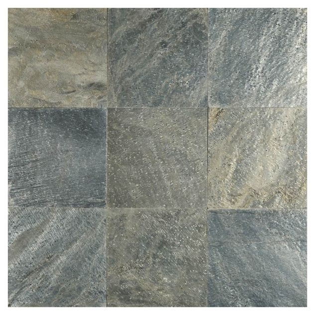
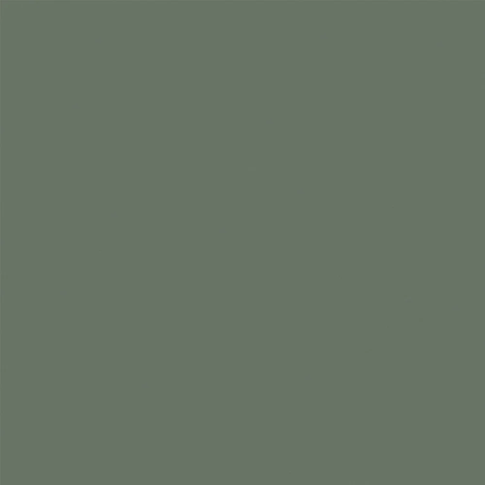
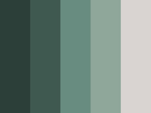
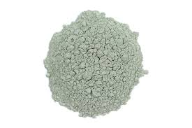
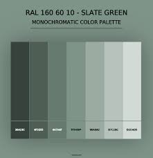
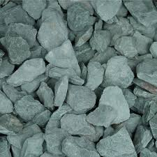
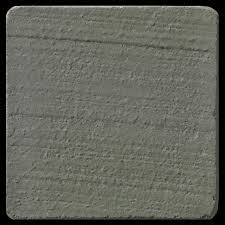
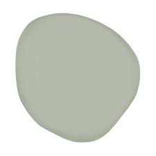
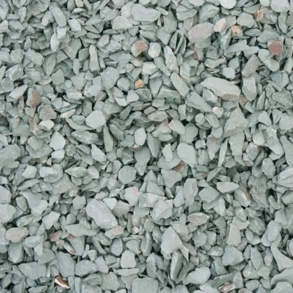
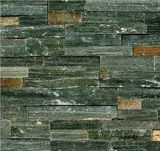

Slate Green Gallery
Slate Green Examples
Slate green is a muted, grayish-green color with subtle variations. Some common variations include:
Light Slate Green - A softer, pastel-like version with more gray and a hint of blue.
Dark Slate Green - A deeper, richer shade with stronger green and gray tones.
Slate Green - A more neutral variant with increased gray, making it more subdued.
Blue Slate Green - A cooler version with a slight bluish undertone.
Olive Slate Green - A warmer shade with hints of yellow or brown.
Muted Slate Green - A desaturated, dusty version, often appearing earthy.
Soft Slate Green - A gentle, airy version with a balanced mix of gray and green.









